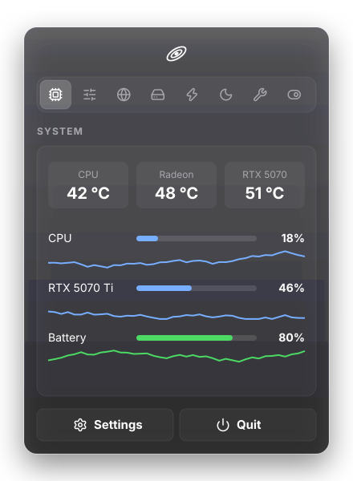
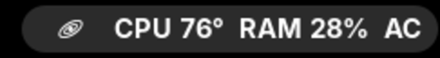

System
CPU, every GPU (AMD, Intel, NVIDIA), memory pressure, temperatures, fans, battery health, with live graphs.
System monitor, volume mixer and toolbox behind one icon in the GNOME top bar.
Version 0.1.0 · pre-release

The utilities you would otherwise install one by one, in a single panel that opens right under its icon.
CPU, every GPU (AMD, Intel, NVIDIA), memory pressure, temperatures, fans, battery health, with live graphs.
Volume per app with boost above 100 %, mute, and a different speaker or headset for each app.
No suspend, no screen blanking, for 15 minutes or until you say so. Stops by itself on low battery.
Live speed, session totals, addresses, apps with open connections, a speed test on demand.
Space per volume, read and write speed, drive health from SMART, safe eject.
Power flow, power mode, mouse and headset batteries, the apps using the most CPU.
Everything you copy, searchable and pinnable. Stays on your computer; entries password managers mark as secret are skipped.
Select any area: its text or QR code lands on your clipboard. Fully offline.
Images, audio, video and documents. Compress, make GIFs. Everything runs locally.
Caches, Trash and leftovers of removed apps. Shows everything before it deletes anything.
Search, install, remove and update RPM and Flatpak apps without a terminal.
One large live preview per window, minimized ones included, grouped by app.
Pick the readings you care about (CPU temperature, memory, battery watts, GPU, network) and Andromeda shows them as plain text next to its icon. No graphs fighting for space.
Click the icon or press Super+A for the full panel.

Panel and Settings share one glass style: a dark tint, a fine light edge and soft text shadows, on one consistent scale of spacing and corners.
With Blur My Shell, add andromeda under Applications and the desktop blurs softly behind it.
A tiny background service does the measuring, at about 0.2 % of one CPU core and 28 MB of memory. The panel only runs while it is open.
Three steps on Fedora 44 or newer with GNOME 50.
Get andromeda-*.rpm from the releases page, then:
sudo dnf install ./andromeda-*.rpmGNOME on Wayland loads new extensions only at login.
Open the Extensions app and turn on Andromeda. The icon appears in the top bar.
Prefer to build it yourself? git clone https://github.com/Incept0s/andromeda && cd andromeda && scripts/install.sh